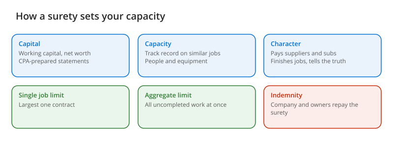

Bonding capacity: how it is set and how to grow it
In one sentence: your bonding capacity is the surety's judgment of how much work you can carry at once and on one job, and it grows with working capital, net worth, a track record and good financial reporting.

The two limits
- Single job limit: the largest one contract the surety will bond.
- Aggregate limit: the total of all your uncompleted bonded (and often unbonded) work at once.
What the surety looks at
Often summarized as the three Cs:
- Capital: working capital and net worth on CPA-prepared statements. Sureties commonly size capacity as a multiple of working capital; ask your agent what multiple your surety uses.
- Capacity: your experience with jobs of that size and type, your people and your equipment.
- Character: reputation, paying suppliers and subs, finishing jobs, honesty with the surety.
The indemnity agreement
Sureties almost always ask the company and its owners (often spouses too) to sign a general indemnity agreement: if the surety pays a claim, they can recover from you. Read it with an attorney. See Surety bonding and bonding capacity and Payment and performance bonds.
Growing capacity
- Keep profit in the company instead of distributing it all; working capital is the base.
- Get reviewed or audited statements from a construction CPA. See Financial statements a surety and a bank want to see.
- Grow job size in steps; a track record on $2 million jobs supports a request for $3 million.
- Send the surety quarterly WIP schedules without being asked.
- Keep a bank line of credit; it shows liquidity.
- Use a surety agent who specializes in contractors.
SBA surety bond guarantee
Small contractors that can't yet get standard bonding may qualify for the U.S. Small Business Administration's surety bond guarantee program through participating sureties. Check the SBA's current limits.
PM notes
A surety relationship is long-term. Tell them early about a job in trouble; surprises cost more capacity than bad news.
Common mistakes
- Distributing all profit and wondering why capacity doesn't grow.
- Jumping to a job size far beyond your track record.
- Signing the indemnity without reading it.